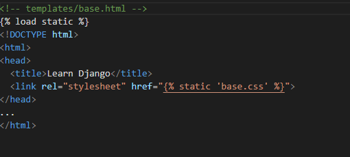
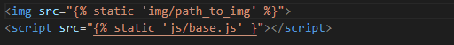
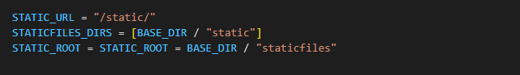
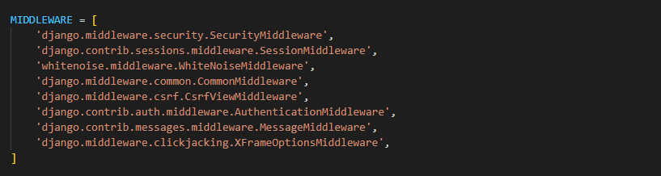
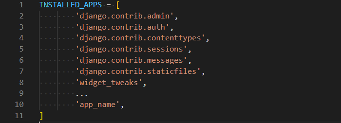
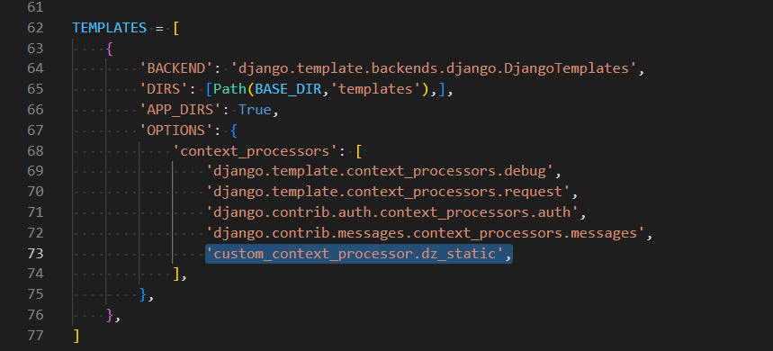
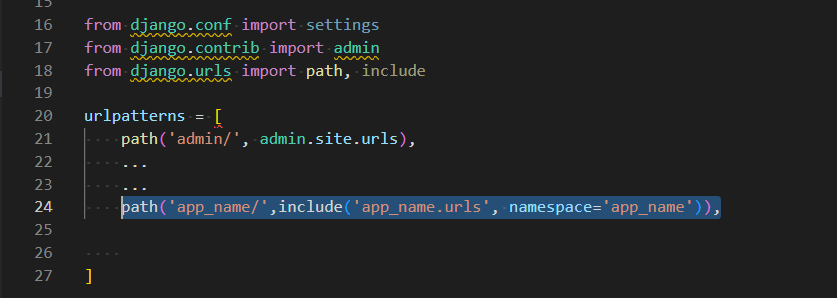
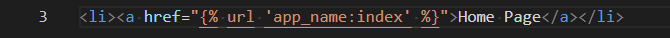
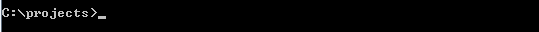
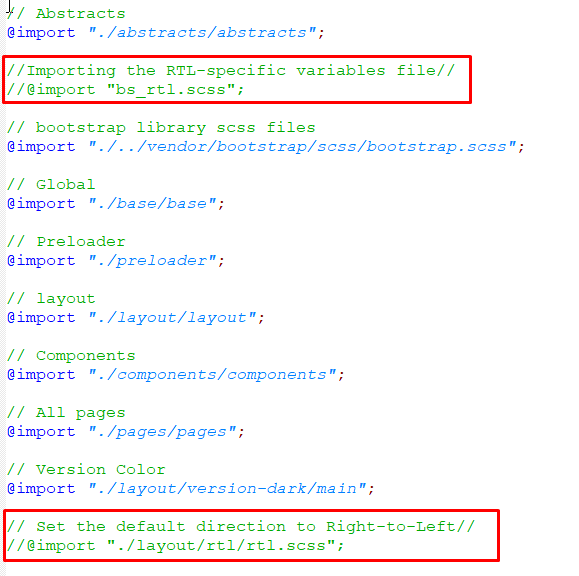

Jiade
Jiade – Django Crypto Trading Admin Dashboard Template
This documentation is released on 03 Febuary 2024
Thank you for purchasing this Django template.
Setup Django - On Your Local Machine
1.- Introduction
Jiade is a fully featured premium admin dashboard template in Django with developer-friendly codes.
2.- Prerequisites
Please follow below steps to install and setup all prerequisites:
-
Python
Make sure to have the Python installed & running in your computer. If you already have installed Python on your computer, you can skip this step. Please use Python version 3 or if you are using python version 2 then make sure to run all the below commands with python insted of python3.
For windows
- Download python from windows store
- Select the Python's version to download.
- Click on the Install Now
- Installation in Process
For Linux
- sudo apt update
- sudo apt install python3
-
Check Pip version
py -m pip --version
upgread pip
py -m pip install --upgrade pip -
Virtualenv
Make sure to have the
virtualenvinstalled globally & running on your computer. If you already have installed on your computer, you can skip this step.Virtualenv installation command for linux & mac os
python3 -m pip install --user virtualenvVirtualenv installation command for Windows
py -m pip install --user virtualenv
3.- Installation
-
Install Prerequisites
Make sure to have all above prerequisites installed & running on your computer
After you finished with the above steps, you can run the following commands into the terminal / command prompt from the root directory of the project to run the project locally or build for production use:
-
Command Description
-
python -m venv environment_nameCreate Virtual Environment on linux & mac OS
-
python -m venv environment_nameCreate Virtual Environment on Windows OS
-
source environment_name/bin/activateActivate Environment on Linux & mac OS
-
environment_name/Scripts/activateActivate Environment on Windows OS
-
pip3 install djangoInstall Django on linux & mac OS
-
pip install djangoInstall Django on Windows OS
Note: Depending on your installation, you may need to use either pip3 or pip and for python you may need to use either python3 or python.
Run below commands for install the libraries
pip install -r requirements.txt
Run below command for database migration
For Windows: python manage.py migrate
For Linux: python manage.py migrate
To create a superuser run the below command
python manage.py createsuperuser
enter username Your Username
enter your Email Address
enter your Password
enter your Password again
Run below command for run your project
For Windows:python manage.py runserver
For Linux:python manage.py runserver
Static Files
Within the settings.py file, near the bottom, there is a single line of configuration for static files called STATIC_URL, which is the location of static files in our project.
#django_project/settings.py
STATIC_URL = "/static/"
This means that all static files will be stored in the location http://127.0.0.1:8000/static/ or http://localhost:8000/static/.
Loading static files into Templates
Loading static files in a template is a two-step process:
- add {% load static %} at the top of the template
- add the {% static %} template tag with the proper link
Let's assume we are using a templates/base.html file for a django project. To add our static base.css file to it we'd start by adding {% load static %} at the top of the file and then use the {% static %} tag with the path to it. Since the STATIC_URL is already set to /static/ we don't need to write the full route out of static/base.css and can instead shorten it to base.css.
If you save and reload the web page, you'll see the changes. Adding links for either images in an img folder or JavaScript in a js folder would look as follows:
Collectstatic
Serving static files in production requires several additional steps and is where the confusion typically arises for Django newcomers. Local development is designed to keep things nice and easy, but it is far from performant. In a production environment it is more efficient to combine all static files in the Django project into one location and serve that a single time.
Django comes with a built-in management command, collectstatic, that does this for us.
We need three more configurations in our settings.py file though before collectstatic will work properly. The first is STATICFILES_DIRS which defines additional locations, if any, the staticfiles app should look within when running collectstatic. In our simple example the only location for local files is the static directory so we will set that now.

Next up is STATIC_ROOT which sets the absolute location of these collected files, typically called staticfiles. In other words, when collecstatic is run locally it will combine all available static files, as defined by STATICFILES_DIRS and place them within a directory called staticfiles. This is how we set that configuration
Now we can run the command python manage.py collectstatic which will create a new staticfiles directory.
$ python manage.py collectstatic
If you look within it you'll see that staticfiles also has folders for admin (the built-in admin has its own static files) directories are in your static folder.
As a brief recap:
- STATIC_URL is the URL location of static files located in STATIC_ROOT
- STATICFILES_DIRS tells Django where to look for static files in a Django project, such as a top-level static folder
- STATIC_ROOT is the folder location of static files when collectstatic is run
Production
Even though we've configured our Django project to collect static files properly, there's one more step involved which is not included in the official Django docs. That is the configuration of WhiteNoise to serve the static files in production. The first step is to install the latest version of the package:
$ python -m pip install whitenoise
Then in the django_project/settings.py file make one changes:
- under MIDDLEWARE, add a new WhiteNoiseMiddleware on the third line
It should look like the following:
That's it! Run python manage.py collectstatic again so that the files are stored using WhiteNoise. And then deploy with confidence to the hosting platform of your choice.
Server Deployment
Prerequisites and Goals
In order to complete this guide, you should have a fresh Ubuntu 20.04 server instance with a basic firewall and a non-root user with sudo privileges configured. You can learn how to set this up by running through our initial server setup guide. We will be installing Django within a virtual environment. Installing Django into an environment specific to your project will allow your projects and their requirements to be handled separately. Once we have our database and application up and running, we will install and configure the Gunicorn application server. This will serve as an interface to our application, translating client requests from HTTP to Python calls that our application can process. We will then set up Nginx in front of Gunicorn to take advantage of its high performance connection handling mechanisms and its easy-to-implement security features. Let’s get started
Installing the Packages from the Ubuntu Repositories
To begin the process, we’ll download and install all of the items we need from the Ubuntu repositories. We will use the Python package manager pip to install additional components a bit later. We need to update the local apt package index and then download and install the packages. The packages we install depend on which version of Python your project will use. If you are using Django with Python 3, type:
$ sudo apt update
$ sudo apt install python3-pip python3-dev libpq-dev nginx curl
Creating a Python Virtual Environment for your Project
we can begin getting the rest of our project requirements ready. We will be installing our Python requirements within a virtual environment for easier management. To do this, we first need access to the virtualenv command. We can install this with pip. If you are using Python 3, upgrade pip and install the package by typing:
$ sudo -H pip3 install --upgrade pip
$ sudo -H pip3 install virtualenv
With virtualenv installed, we can start forming our project. Create and move into a directory where we can keep our project files:
$ mkdir ~/myprojectdir
$ cd ~/myprojectdir
Within the project directory, create a Python virtual environment by typing:
$ virtualenv myprojectenv
This will create a directory called myprojectenv within your myprojectdir directory. Inside, it will install a local version of Python and a local version of pip. We can use this to install and configure an isolated Python environment for our project.
Before we install our project’s Python requirements, we need to
activate the virtual environment. You can do that by typing:
$ source myprojectenv/bin/activate
Your prompt should change to indicate that you are now operating within a Python virtual environment. It will look something like this:
(myprojectenv)[email protected]:~/myprojectdir$.
With your virtual environment active, install project requriments with the local instance of pip:
$ pip install -r requirements.txt
Adjusting the Project Settings
Open the settings file in your text editor:
$ nano ~/myprojectdir/myproject/settings.py
Start by locating the ALLOWED_HOSTS directive. This defines a list of the server’s addresses or domain names may be used to connect to the Django instance. Any incoming requests with a Host header that is not in this list will raise an exception. Django requires that you set this to prevent a certain class of security vulnerability.
# The simplest case: just add the domain name(s) and IP addresses of your Django server
# ALLOWED_HOSTS = [ 'example.com', '203.0.113.5']
# To respond to 'example.com' and any subdomains, start the domain with a dot
# ALLOWED_HOSTS = ['.example.com', '203.0.113.5']
ALLOWED_HOSTS = ['your_server_domain_or_IP', 'second_domain_or_IP', . . ., 'localhost']
Save and close the file when you are finished.
Completing Initial Project Setup
Now, we can migrate the initial database schema to our Sqlite database using the management script:
$ python ~/myprojectdir/manage.py makemigrations
$ python ~/myprojectdir/manage.py migrate
Create an administrative user for the project by typing:
$ python ~/myprojectdir/manage.py createsuperuser
You will have to select a username, provide an email address, and choose and confirm a password.
We can collect all of the static content into the directory location we configured by typing:
$ python ~/myprojectdir/manage.py collectstatic
You will have to confirm the operation. The static files will then be placed in a directory called static within your project directory.
If you followed the initial server setup guide, you should have a UFW firewall protecting your server. In order to test the development server, we’ll have to allow access to the port we’ll be using.
Create an exception for port 8000 by typing:
$ sudo ufw allow 8000
Finally, you can test our your project by starting up the Django development server with this command:
$ python ~/myprojectdir/manage.py runserver 0.0.0.0:8000
In your web browser, visit your server’s domain name or IP address followed by :8000:
http://server_domain_or_IP:8000
When you are finished testing, hit CTRL-C in the terminal window to stop Gunicorn.
We’re now finished configuring our Django application. We can back out of our virtual environment by typing:
The virtual environment indicator in your prompt will be removed.
Creating systemd Socket and Service Files for Gunicorn
We have tested that Gunicorn can interact with our Django application, but we should implement a more robust way of starting and stopping the application server. To accomplish this, we’ll make systemd service and socket files. The Gunicorn socket will be created at boot and will listen for connections. When a connection occurs, systemd will automatically start the Gunicorn process to handle the connection. Start by creating and opening a systemd socket file for Gunicorn with sudo privileges:
$ sudo nano /etc/systemd/system/gunicorn.socket
Inside, we will create a [Unit] section to describe the socket, a [Socket] section to define the socket location, and an [Install] section to make sure the socket is created at the right time:
[Unit] Description=gunicorn socket [Socket] ListenStream=/run/gunicorn.sock [Install] WantedBy=sockets.target
Save and close the file when you are finished.
Next, create and open a systemd service file for Gunicorn with sudo privileges in your text editor. The service filename should match the socket filename with the exception of the extension:
$ sudo nano /etc/systemd/system/gunicorn.service
Start with the [Unit] section, which is used to specify metadata and dependencies. We’ll put a description of our service here and tell the init system to only start this after the networking target has been reached. Because our service relies on the socket from the socket file, we need to include a Requires directive to indicate that relationship:
[Unit] Description=gunicorn daemon Requires=gunicorn.socket After=network.target
Next, we’ll open up the [Service] section. We’ll specify the user and group that we want to process to run under. We will give our regular user account ownership of the process since it owns all of the relevant files. We’ll give group ownership to the www-data group so that Nginx can communicate easily with Gunicorn. We’ll then map out the working directory and specify the command to use to start the service. In this case, we’ll have to specify the full path to the Gunicorn executable, which is installed within our virtual environment. We will bind the process to the Unix socket we created within the /run directory so that the process can communicate with Nginx. We log all data to standard output so that the journald process can collect the Gunicorn logs. We can also specify any optional Gunicorn tweaks here. For example, we specified 3 worker processes in this case:
[Unit] Description=gunicorn daemon Requires=gunicorn.socket After=network.target [Service] User=sammy Group=www-data WorkingDirectory=/home/sammy/myprojectdir ExecStart=/home/sammy/myprojectdir/myprojectenv/bin/gunicorn \ --access-logfile - \ --workers 3 \ --bind unix:/run/gunicorn.sock \ myproject.wsgi:application [Install] WantedBy=multi-user.target
With that, our systemd service file is complete. Save and close it now.
We can now start and enable the Gunicorn socket. This will create the socket file at /run/gunicorn.sock now and at boot. When a connection is made to that socket, systemd will automatically start the gunicorn.service to handle it:
$ sudo systemctl start gunicorn.socket
$ sudo systemctl enable gunicorn.socket
We can confirm that the operation was successful by checking for the socket file.
Checking for the Gunicorn Socket File
Check the status of the process to find out whether it was able to start:
$ sudo systemctl status gunicorn.socket
You should receive an output like this:
Output ● gunicorn.socket - gunicorn socket Loaded: loaded (/etc/systemd/system/gunicorn.socket; enabled; vendor prese> Active: active (listening) since Fri 2020-06-26 17:53:10 UTC; 14s ago Triggers: ● gunicorn.service Listen: /run/gunicorn.sock (Stream) Tasks: 0 (limit: 1137) Memory: 0B CGroup: /system.slice/gunicorn.socket
Next, check for the existence of the gunicorn.sock file within the /run directory:
file /run/gunicorn.sock
Output /run/gunicorn.sock: socket
If the systemctl status command indicated that an error occurred or if you do not find the gunicorn.sock file in the directory, it’s an indication that the Gunicorn socket was not able to be created correctly. Check the Gunicorn socket’s logs by typing:
$ sudo journalctl -u gunicorn.socket
Take another look at your /etc/systemd/system/gunicorn.socket file to fix any problems before continuing.
Testing Socket Activation
Currently, if you’ve only started the gunicorn.socket unit, the gunicorn.service will not be active yet since the socket has not yet received any connections. You can check this by typing:
$ sudo systemctl status gunicorn
Output ● gunicorn.service - gunicorn daemon Loaded: loaded (/etc/systemd/system/gunicorn.service; disabled; vendor preset: enabled) Active: inactive (dead)
To test the socket activation mechanism, we can send a connection to the socket through curl by typing:
$ curl --unix-socket /run/gunicorn.sock localhost
You should receive the HTML output from your application in the terminal. This indicates that Gunicorn was started and was able to serve your Django application. You can verify that the Gunicorn service is running by typing:
$ sudo systemctl status gunicorn
Output ● gunicorn.service - gunicorn daemon Loaded: loaded (/etc/systemd/system/gunicorn.service; disabled; vendor preset: enabled) Active: active (running) since Fri 2020-06-26 18:52:21 UTC; 2s ago TriggeredBy: ● gunicorn.socket Main PID: 22914 (gunicorn) Tasks: 4 (limit: 1137) Memory: 89.1M CGroup: /system.slice/gunicorn.service ├─22914 /home/sammy/myprojectdir/myprojectenv/bin/python /home/sammy/myprojectdir/myprojectenv/bin/gunicorn --access-logfile - --workers 3 --bind unix:/run/gunico> ├─22927 /home/sammy/myprojectdir/myprojectenv/bin/python /home/sammy/myprojectdir/myprojectenv/bin/gunicorn --access-logfile - --workers 3 --bind unix:/run/gunico> ├─22928 /home/sammy/myprojectdir/myprojectenv/bin/python /home/sammy/myprojectdir/myprojectenv/bin/gunicorn --access-logfile - --workers 3 --bind unix:/run/gunico> └─22929 /home/sammy/myprojectdir/myprojectenv/bin/python /home/sammy/myprojectdir/myprojectenv/bin/gunicorn --access-logfile - --workers 3 --bind unix:/run/gunico> Jun 26 18:52:21 django-tutorial systemd[1]: Started gunicorn daemon. Jun 26 18:52:21 django-tutorial gunicorn[22914]: [2020-06-26 18:52:21 +0000] [22914] [INFO] Starting gunicorn 20.0.4 Jun 26 18:52:21 django-tutorial gunicorn[22914]: [2020-06-26 18:52:21 +0000] [22914] [INFO] Listening at: unix:/run/gunicorn.sock (22914) Jun 26 18:52:21 django-tutorial gunicorn[22914]: [2020-06-26 18:52:21 +0000] [22914] [INFO] Using worker: sync Jun 26 18:52:21 django-tutorial gunicorn[22927]: [2020-06-26 18:52:21 +0000] [22927] [INFO] Booting worker with pid: 22927 Jun 26 18:52:21 django-tutorial gunicorn[22928]: [2020-06-26 18:52:21 +0000] [22928] [INFO] Booting worker with pid: 22928 Jun 26 18:52:21 django-tutorial gunicorn[22929]: [2020-06-26 18:52:21 +0000] [22929] [INFO] Booting worker with pid: 22929
If the output from curl or the output of systemctl status indicates that a problem occurred, check the logs for additional details:
sudo journalctl -u gunicorn
Check your /etc/systemd/system/gunicorn.service file for problems. If you make changes to the /etc/systemd/system/gunicorn.service file, reload the daemon to reread the service definition and restart the Gunicorn process by typing:
$ sudo systemctl daemon-reload
$ sudo systemctl restart gunicorn
Make sure you troubleshoot the above issues before continuing.
Configure Nginx to Proxy Pass to Gunicorn
Now that Gunicorn is set up, we need to configure Nginx to pass traffic to the process.
Start by creating and opening a new server block in Nginx’s sites-available directory:
$ sudo nano /etc/nginx/sites-available/myproject
Inside, open up a new server block. We will start by specifying that this block should listen on the normal port 80 and that it should respond to our server’s domain name or IP address:
server {
listen 80;
server_name server_domain_or_IP;
}
Finally, we’ll create a location / {} block to match all other requests. Inside of this location, we’ll include the standard proxy_params file included with the Nginx installation and then we will pass the traffic directly to the Gunicorn socket:
server {
listen 80;
server_name server_domain_or_IP;
location = /favicon.ico { access_log off; log_not_found off; }
location / {
include proxy_params;
proxy_pass http://unix:/run/gunicorn.sock;
}
}
Save and close the file when you are finished. Now, we can enable the file by linking it to the sites-enabled directory:
$ sudo ln -s /etc/nginx/sites-available/myproject /etc/nginx/sites-enabled
Test your Nginx configuration for syntax errors by typing:
sudo nginx -t
If no errors are reported, go ahead and restart Nginx by typing:
$ sudo systemctl restart nginx
Finally, we need to open up our firewall to normal traffic on port 80. Since we no longer need access to the development server, we can remove the rule to open port 8000 as well:
$ sudo ufw delete allow 8000
$ sudo ufw allow 'Nginx Full'
You should now be able to go to your server’s domain or IP address to view your application
Troubleshooting Nginx and Gunicorn
The primary place to look for more information is in Nginx’s error logs. Generally, this will tell you what conditions caused problems during the proxying event. Follow the Nginx error logs by typing:
$ sudo tail -F /var/log/nginx/error.log
As you update your configuration or application, you will likely need to restart the processes to adjust to your changes.
If you update your Django application, you can restart the Gunicorn process to pick up the changes by typing:
$ sudo systemctl restart gunicorn
If you change Gunicorn socket or service files, reload the daemon and restart the process by typing:
$ sudo systemctl daemon-reload
$ sudo systemctl restart gunicorn.socket gunicorn.service
If you change the Nginx server block configuration, test the configuration and then Nginx by typing:
$ sudo nginx -t && sudo systemctl restart nginx
These commands are helpful for picking up changes as you adjust your configuration.
Theme Integration
Integate Jiade In Your Existing Project
1) Copy App and paste in your current project directory.
2) Copy App static content and paste in your current Project static directory.
3) Go to settings.py in your project and add 'app_name'.
4) Go to the templates/ directory and copy the template/app_name folder and error pages, paste in your project templates/ directory.
5) Copy the dz.py and custom_context_processor.pyfiles, and paste it on you project folder.
6) Go to settings.py and add the custom_context_processor. in templates settings
Check the Folder Directories Structure ←
7) Go to urls.py in your core project directory and add this line.
8) Use app url like this:
Sass Compile -
1.- Install Node.js
To compile Sass via the command line first, we need to install node.js. The easiest way is downloading it from the official website nodejs.org open the package and follow the wizard.
2.- Initialize NPM
NPM is the Node Package Manager for JavaScript. NPM makes it easy to install and uninstall third party packages. To initialize a Sass project with NPM, open your terminal and CD (change directory) to your project folder.
npm init
Once in the correct folder, run the command npm init. You will be prompted to answer several questions about the project, after which NPM will generate a package.json file in your folder.
3.- Install Node-Sass
Node-sass is an NPM package that compiles Sass to CSS (which it does very quickly too). To install node-sass run the following command in your terminal: npm install node-sass
npm install node-sass
4.- Write Node-sass Command
Everything is ready to write a small script in order to compile Sass. Open the package.json file in a code editor. You will see something like this: In the scripts section add an scss command

"scripts": {
"sass": "node-sass --watch scss/main.scss css/style.css"
},
5.- Run the Script
To execute our one-line script, we need to run the following command in the terminal: npm run sass
npm run sass
6.- Other Option
--source-map
"sass": "node-sass --watch scss/main.scss css/style.css --source-map css/style.css.map"
Folder Directories -
- package
- dashboard
- __pycache__
- __init__.py
- asgi.py
- settings.py
- urls.py
- wsgi.py
- static
- jiade
- ajax
- css
- icons
- images
- js
- scss
- vendor
- jiade
- templates
- jiade
- __pycache__
- migrations
- templatetags
- __init__.py
- admin.py
- apps.py
- models.py
- tests.py
- urls.py
- views.py
- jiade_views.py
- custom_context_processor.py
- db.sqlite3
- dz.py
- manage.py
- requirements.txt
- dashboard
RTL integration -
Step 1
Change the direction of theme from here. The file path is given below:-
static/jiade/js/dlabnav-init.js
var dlabSettingsOptions = {
direction: 'rtl'
};
Step 2
scss/main.scss
Uncomment the given files for enable RTL direction
Step 3
To Compile RTL CSS, Change The File Path And Then Compile CSS in package.json file
"scripts": {
"sass": "node-sass --watch scss/main.scss css/style-rtl.css --source-map css/style.css.map"
},
Theme Features -
static/jiade/js/dlabnav-init.js
var dlabSettingsOptions = {
typography: "poppins",
version: "light",
layout: "vertical",
primary: "color_1",
headerBg: "color_3",
navheaderBg: "color_3",
sidebarBg: "color_1",
sidebarStyle: "full",
sidebarPosition: "fixed",
headerPosition: "fixed",
containerLayout: "full",
direction: 'ltr',
};
Color Theme -
So many color option available
var dlabSettingsOptions= {
typography: "poppins", More Options => ["poppins" , "roboto" , "Open Sans" , "Helventivca" ]
version: "light", More Options => ["light" , "dark"]
layout: "horizontal", More Options => ["horizontal" , "vertical"]
primary: "color_11", More Options => ["color_1," , "color_2," ..... "color_15"]
headerBg: "color_1", More Options => ["color_1," , "color_2," ..... "color_15"]
navheaderBg: "color_1", More Options => ["color_1," , "color_2," ..... "color_15"]
sidebarBg: "color_11", More Options => ["color_1," , "color_2," ..... "color_15"]
sidebarStyle: "compact", More Options => ["full" , "mini" , "compact" , "modern" , "overlay" , "icon-hover"]
sidebarPosition: "static", More Options => ["static" , "fixed"]
headerPosition: "fixed", More Options => ["static" , "fixed"]
containerLayout: "full", More Options => [""wide"]
direction: direction More Options => ["ltr" , "rtl"]
};
var dlabThemeSet1 = {
typography: "poppins",
version: "light",
layout: "vertical",
primary: "color_1",
headerBg: "color_3",
navheaderBg: "color_3",
sidebarBg: "color_1",
sidebarStyle: "full",
sidebarPosition: "fixed",
headerPosition: "fixed",
containerLayout: "full",
direction: 'ltr',
};
var dlabThemeSet2 = {
typography: "poppins",
version: "light",
layout: "vertical",
primary: "color_13",
headerBg: "color_13",
navheaderBg: "color_13",
sidebarBg: "color_1",
sidebarStyle: "mini",
sidebarPosition: "fixed",
headerPosition: "fixed",
containerLayout: "full",
direction: 'ltr',
};
var dlabThemeSet3 = {
typography: "poppins",
version: "dark",
layout: "vertical",
primary: "color_1",
headerBg: "color_3",
navheaderBg: "color_3",
sidebarBg: "color_1",
sidebarStyle: "full",
sidebarPosition: "fixed",
headerPosition: "fixed",
containerLayout: "full",
direction: 'ltr',
};
var dlabThemeSet4 = {
typography: "poppins",
version: "light",
layout: "horizontal",
primary: "color_7",
headerBg: "color_1",
navheaderBg: "color_1",
sidebarBg: "color_7",
sidebarStyle: "full",
sidebarPosition: "fixed",
headerPosition: "fixed",
containerLayout: "full",
direction: 'ltr',
};
var dlabThemeSet5 = {
typography: "poppins",
version: "light",
layout: "horizontal",
primary: "color_1",
headerBg: "color_3",
navheaderBg: "color_3",
sidebarBg: "color_1",
sidebarStyle: "full",
sidebarPosition: "fixed",
headerPosition: "fixed",
containerLayout: "full",
direction: 'ltr',
};
var dlabThemeSet6 = {
typography: "poppins",
version: "light",
layout: "vertical",
primary: "color_13",
headerBg: "color_13",
navheaderBg: "color_10",
sidebarBg: "color_10",
sidebarStyle: "full",
sidebarPosition: "fixed",
headerPosition: "fixed",
containerLayout: "full",
direction: 'ltr',
};
Credits -
-
amcharts
-
animate
-
apexchart
-
bootstrap
-
bootstrap4-notify
-
bootstrap-daterangepicker
-
bootstrap-material-datetimepicker
-
bootstrap-multiselect
-
bootstrap-select
-
bootstrap-tagsinput
-
bootstrap-touchspin
-
chart.js
-
chartist-plugin-tooltips
-
clockpicker
-
datatables
-
dropzone
-
fullcalendar
-
highlightjs
-
jquery
-
jquery-asColor
-
jquery-asColorPicker
-
jquery-asGradient
-
jquery-sparkline
-
jquery-steps
-
jqueryui
-
jquery-validation
-
metismenu
-
moment
-
nestable2
-
nouislider
-
perfect-scrollbar
-
pickadate
-
select2
-
summernote
-
svganimation
-
sweetalert2
Our Products -
Don’t Forget To Check Our Popular Items


Do You Need Help To Customization
After Purchase A Template...
You Will Start Customizing According Your Requirement
BUT What If You Don't Know
SOLUTION IS HIRE DexignZone
Hire Same Team For Quality Customization
- In Order To Ensure Your Website Is Live, We Will Customize
The Template According To Your Requirements And Upload It to the Server.